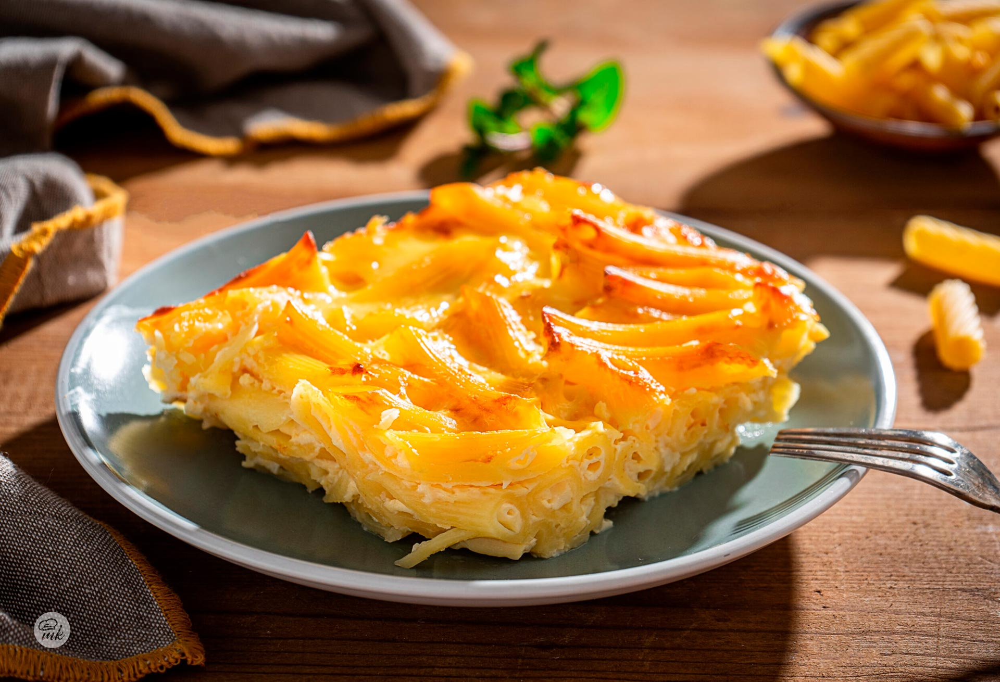

Home
Макарони на фурна

Description
Boil 300 g macaroni until just tender. Cook 300 g ground meat with onion, garlic, and tomato paste.
Mix macaroni with meat sauce, pour into a greased baking dish.
Beat 2 eggs with 200 ml milk and 100 g grated cheese, pour on top.
Bake at 180°C for 30–40 minutes until golden and set. Let rest a few minutes before serving.
Ingredients
- 300 g macaroni
- 300 g ground meat (beef or mixed)
- 1 onion
- 2 cloves garlic
- 2 tbsp tomato paste
- Olive oil
- Salt
- Black pepper
- 2 eggs
- 200 ml milk
- 100 g grated cheese (kashkaval or similar)
Steps
- Boil macaroni until tender, drain and set aside.
- Cook ground meat with onion, garlic, tomato paste, salt, and pepper.
- Mix macaroni with meat sauce and put into a greased baking dish.
- Beat eggs with milk and cheese, pour over macaroni.
- Bake at 180°C for 30–40 minutes until golden, then rest a few minutes before serving.